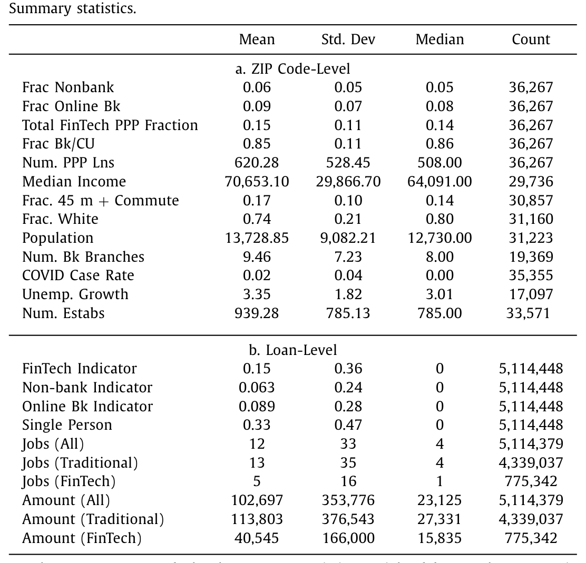
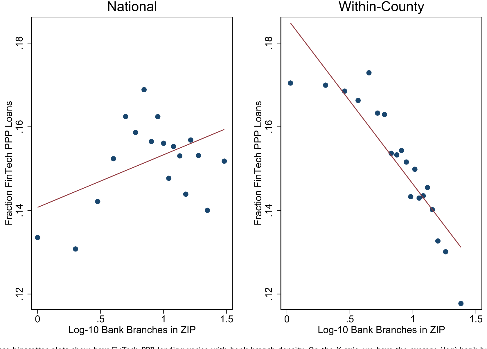
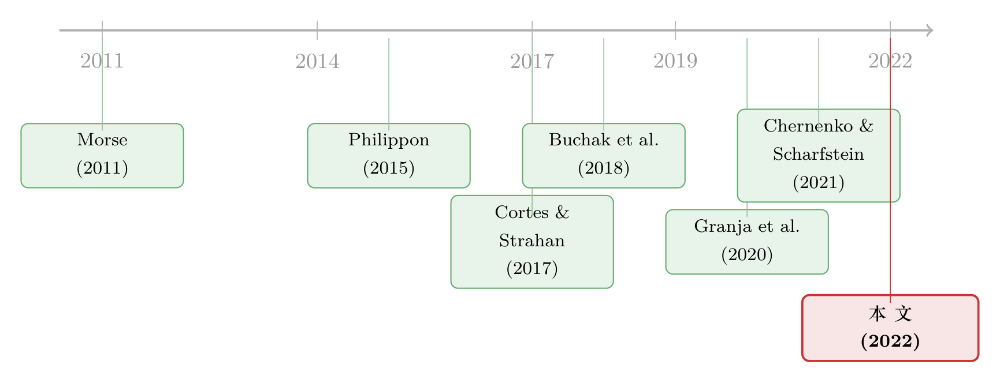

把饼做大，还是把饼重分？——金融科技补上了银行够不着的那一块
本文读的是 Erel & Liebersohn (2022, Journal of Financial Economics)：借着新冠疫情下美国「薪资保护计划」(Paycheck Protection Program, PPP) 这场突如其来的需求冲击，作者发现金融科技 (FinTech) 贷款机构恰恰在银行网点稀少、收入更低、少数族裔占比更高的 ZIP 码里被更多地使用；而且 FinTech 与银行之间的替代非常小——只有银行放贷下滑的约 27% 被 FinTech 补回。换句话说，FinTech 主要是在把饼做大，而不是在抢银行的客户。
1 一个被「危机」逼出来的自然实验
先从一个画面说起。2020 年春天，全球经济在三个月里收缩了 3.1%，美国政府匆忙推出 PPP，准备在短短几个月内向小企业发放高达 $669 billion 的、可被全额豁免的贷款。规模之大、节奏之快，在美国经济刺激史上都属罕见——到 8 月 8 日为止，约 5.1 million 笔贷款经由 5460 家金融机构发出，支撑了号称 51 million 个就业岗位。
但真正有意思的，是发放渠道里的一个「最后一刻」决定：小企业管理局 (Small Business Administration, SBA) 史无前例地批准了一批专攻金融科技的非传统放贷人，让它们与传统银行并肩直接发放 PPP 资金。
于是一道天然的难题摆在了研究者面前：当一笔巨大的、由外生冲击凭空造出来的信贷需求砸下来时，FinTech 到底改变了金融服务的什么？ 它是去服务那些银行一直够不着的客户，还是只是用更快、更方便的体验，把本来就能从银行拿到钱的人「截胡」过来？
这正是 Erel 和 Liebersohn 想回答的问题。监管者一直担心 FinTech 比传统银行更不受约束、甚至可能更具歧视性；而 FinTech 则辩称，正因为它们不依赖关系、不需要面对面，反而更不歧视。谁对谁错，光靠嘴说没用——这场「多十亿美元的实验」给了一个难得的检验机会。
2 谁是「FinTech」：先把定义讲清楚
在动手之前，作者先把「FinTech 放贷人」这个标签定义清楚，因为后面所有结论都挂在这个定义上。他们把两类机构合并称作 FinTech：
- 非银行放贷人 (nonbank lenders)：像 Kabbage 这样的非存款类机构，不靠存款融资，因而不受典型的银行监管，普遍依赖金融科技放贷；
- 网络银行 (online banks)：本身是受监管的存款类银行，但只有一个行政性网点、几乎全程线上运营。作者把仅有一个行政网点、且高度依赖技术的银行划入此类，再补上 Abrams (2019) 识别出的若干家线上 FinTech 银行（如 Axos Bank、Capital One Bank、TIAA Bank）。
数据上，最主要的来源是 SBA 公布的 贷款层面 (loan-level) PPP 数据，里面带有借款人 ZIP 码、6 位 NAICS 行业代码，以及经办机构的名称。作者用这些名称把贷款匹配到 FFIEC 的银行标识，再叠上 2018 年 FDIC「存款汇总」里的 ZIP 码网点数、2000 年人口普查与 2014–2018 年 ACS 的人口与收入、ZIP Business Patterns 2018 的企业数，以及 Chetty et al. (2020) 「追踪复苏」项目里的县级 COVID 病例率与失业金申领变化。
一个值得记住的样本事实：全样本里 15% 的 PPP 贷款来自 FinTech，其中 6% 来自非银行、9% 来自网络银行。三家网络银行——Cross River Bank、Celtic Bank、WebBank，分别经办了 192,652、146,792、75,837 笔贷款，合计占了网络银行 PPP 贷款的九成以上，而且它们都与非银行 FinTech 有合作。
下面这张表把 ZIP 码层面和贷款层面的概况摆在了一起：平均一个 ZIP 码有 9.5 家银行网点（标准差 7.2），中位数收入约 $64,000，80% 人口为白人；而 FinTech 贷款明显更小——中位数 $15,835，相比之下传统银行贷款中位数约 $27,331，支持的岗位也更少（中位数 1 对 4，均值 5 对 13）。

Table 1
这几个数字已经透出了第一缕线索：FinTech 接到的，似乎是更小、更边缘的那批借款人。
3 识别策略：从「相关」一步步逼近「供给」
接着，一个自然的问题是：FinTech 在某些地区用得更多，到底是因为那里需求特殊（疫情更重、行业更「数字化」），还是因为银行的供给在那里失灵了？作者真正想要的，是后者——贷款供给。
第一步是描述性的：把 FinTech 的使用与地区特征对上号。作者在同一个县内部做比较（即放入县固定效应），看 ZIP 码之间的差异。结论很干净——位于银行网点更少、收入更低、非白人占比更高的 ZIP 码里的借款人，更可能从 FinTech 拿到贷款；而且相对于 FinTech，传统银行把更高比例的 PPP 贷款发给了那些与银行体系联系更紧的行业。银行的放贷，被它过去的关系和物理网点的位置「拴」住了；线上 FinTech 则没有这层束缚。
这一步把 FinTech 的「地理画像」描了出来。下面这张图最直观：横轴是 ZIP 码的（对数）银行网点密度，纵轴是 FinTech 的 PPP 放贷份额——一条清晰的下斜线，网点越稀疏，FinTech 越唱主角。

Figure 4: These binscatter plots show how FinTech PPP lending varies with bank branch density. On the X -axis, we have the average (log) bank branches
但真正关键的一步，是把「需求」从「供给」里剥出来。光看相关性，你永远没法排除「FinTech 多的地方只是恰好需求形态不同」。作者的办法，是借用一个类似 移动份额 (shift-share，又称 "Bartik") 的设计：用每家银行在其他地方的 PPP 放贷积极程度，去预测它在本地「本该有多积极」，再按它在本地的市场份额加权，得到一个与本地 COVID 冲击大小无关的「本地银行响应度」预测值。
这一招的巧思在于：本地银行愿不愿意放 PPP 贷款，被拆成了两部分——一部分来自本地疫情有多严重（需求），另一部分来自「你本地恰好摊上了哪些天生不积极的银行」（供给）。后者与本地的需求冲击正交，于是可以用来识别：当本地银行（因供给原因）少放了一块钱，借款人会不会转向 FinTech？
4 核心反转：替代很小，所以「饼」是被做大的
于是反转出现了。
如果 FinTech 只是在「抢银行的生意」，那么哪里银行收手，FinTech 就该等量地补上——替代率应该接近 1。但作者发现，借款人确实会因为本地银行 PPP 供给不足而部分转向 FinTech，这个替代在统计上显著，可是量级只有银行放贷下滑的约 27%。
把这句话说得更直白些：银行每少放一块钱的 PPP 贷款，FinTech 只补上了大约两毛七。剩下的七成多，没有被任何渠道补上——这恰恰说明，FinTech 触达的是一批新的借款人，是银行体系本就服务不到的那些小企业。所以 FinTech 的作用主要是「扩张」金融服务的供给，而非在固定的盘子里「重新分配」。
这与第一问的发现是一脉相承的。作者还专门看了灾难响应的差异：在 PPP 第二阶段，传统银行和 FinTech 都向 COVID 病例率更高、失业金申领更多的地区发放了更多贷款——但 FinTech 的响应大约是银行的十倍。当冲击来临，反应更快、伸得更远的，是 FinTech。
这里有一个必须挂在嘴边的限定：PPP 贷款的激励与普通信贷不一样——它可能被全额豁免，放贷人几乎不承担违约风险，还能收一笔 5%/3%/1% 的手续费。所以这不是一个标准的信贷可得性实验。作者也诚实地承认了这点，但论证说：本文衡量的是「银行关系（用网点网络刻画）与新技术在分配政府担保信贷上的差异」，这对理解「让更多 FinTech 参与任何政府担保贷款计划（如 SBA 7a）会有什么后果」仍有直接含义。
值得一提的还有第三阶段 (Phase 3) 的「事后验证」：到了由拜登政府主导、75% 的量都来自「二次申领」的第三阶段，FinTech 放贷人的占比翻了一倍多、它们发出的贷款笔数几乎翻了两番——这与本文「FinTech 补的是被遗漏的那批人」的结论高度一致（作者把第三阶段排除在主样本之外，正是因为二次申领等规则变化会污染识别）。
5 文献脉络：从「灾后的放贷人」到「被冲击放大的 FinTech」
把这篇论文放回它所在的研究谱系里看，会更清楚它补上了哪块拼图。
最早的一条线，是问非银行放贷人在冲击之后扮演什么角色。Morse (2011) 发现发薪日贷款 (payday lenders) 在灾后反而帮人们接上了融资；Cortes 和 Strahan (2017) 则展示传统银行会在灾后跨地区重新调配资本。再往后，Philippon (2015) 把矛头指向传统金融体系在不同规模、地区、人群间配置金融服务的低效，为「新技术能否补位」埋下伏笔。

接着，FinTech 自身成了焦点。Buchak et al. (2018) 用按揭市场说明，监管套利与技术共同催生了影子银行的崛起；Gopal 和 Schnabl (2020) 记录了 FinTech 在小企业贷款里日益重要的角色。然后，疫情和 PPP 把所有人拉到了同一个舞台：Granja et al. (2020) 发现银行在第一阶段把信贷投向了受灾更轻的地区——银行没把钱送到最需要的地方。
而最贴近本文的，是两篇关注 PPP 中种族差异的姊妹篇：Chernenko 和 Scharfstein (2021) 聚焦种族偏见，发现佛州黑人和西裔餐馆即便控制了银行网络，也更难拿到 PPP 贷款（关于这一点，可参见《银行不肯放的款，黑人餐馆只能去金融科技公司「绕路」》）；Howell et al. (2020) 则强调自动化——FinTech 与银行转向自动化流程都提升了黑人企业的 PPP 可得性。本文与它们的分工在于：不直接谈种族偏见，而是落在「FinTech 如何在银行网点稀少、少数族裔占比高的地区填补了缺口」，并用替代率这把尺子，量出 FinTech 到底是「扩张」还是「重分」。
这条「FinTech 能否真正普惠」的争论至今未息——它既连着「监督更弱却照样进场」的竞争故事（参见《监督做得更差，却照样抢走你的客户》），也连着「谁在 FinTech 冲击里活下来」的产业重排（参见《金融科技来了，谁活下来了？》）。
6 评论与延伸（Q&A + 研究方向）
(a) 几个可能的疑问
Q：把「网络银行」也算进 FinTech，会不会人为夸大了结论？
这是最该追问的一点。作者的稳健做法有两层：一是在附录里把非银行 (
6%) 与网络银行 (9%) 拆开分别给结果；二是改用 SBA 官方在样本末日 (5 月 8 日) 自行认定的 FinTech 名单重做。此外，对像 Lendio、NAV 这种撮合平台，作者故意把它们背后的机构留在传统银行样本里——这只会削弱而非加强结论，属于保守处理。
Q：「替代只有 27%」凭什么不是需求差异，而是供给？
关键就在那个 Bartik 设计：它用银行在外地的 PPP 积极程度来预测本地供给，从而把「本地疫情多重」这一需求因素剔除掉。只要一家银行在外地不积极的原因与本地的 COVID 冲击无关，这个预测值就能干净地识别供给。当然，这条排他性假设并非铁板一块（见后文）。
Q：PPP 会被豁免、放贷人几乎不担风险，结论还能外推到普通信贷吗？
严格说不能直接外推到「市场化、要承担违约风险」的信贷。但本文测的是一个更窄、也更稳的东西：关系型银行（受网点束缚）与技术型放贷人在分配政府担保信贷时的差异。对所有「全部或部分担保」的政府贷款计划（SBA 7a 等），这个含义是直接的。
Q：FinTech 贷款更小、支持就业更少，是不是说明它服务的是「边缘/低质量」客户？
「更小」恰恰是本文论点的一部分，而非反证：FinTech 贷款中位数
$15,835、中位数只支持 1 个岗位，正说明它够到的是银行不愿伺候的微型企业。经济表现最差的那一档行业/ZIP 码里22%的贷款来自 FinTech，而全国平均是15%；贷款规模最小的那一档里更高达24%。
Q：这跟 Chernenko-Scharfstein、Howell 的「种族」叙事是不是重复了？
不重复，是互补。那两篇问的是「FinTech/自动化能否减少种族层面的差别待遇」，本文问的是「FinTech 能否在地理与关系维度上补上银行的缺口」，并给出一个量化的「扩张 vs 重分」分解。视角不同，结论彼此印证。
Q：会不会是「更数字化的行业」天生爱用 FinTech，造成混淆？
作者查过：把 FinTech 贷款占比按 2 位 NAICS 行业画出来，并没有出现「IT/服务业一枝独秀」的模式（附录图）。所以行业的数字化程度不像是主要驱动力。
(b) 几个可能的研究问题与提案
1. 把「扩张 vs 重分」搬到公司债一级市场。 【经济故事】PPP 是政府担保的小企业信贷，而公司债承销里也有越来越多非银行/平台型中介在「抢份额」。它们究竟是在服务被大行投行忽视的中小发行人（扩张），还是在重分大行的客户？这直接关系到信用市场的可得性。 【可行性】中。需要 Mergent FISD + 承销商身份数据，识别上可借鉴本文的 Bartik 思路——用承销商在其他行业/地区的活跃度预测本地供给。难点在于一级市场的「需求」远比 PPP 难外生化。
2. 外资/跨境 FinTech 信贷的「填补缺口」效应。 【经济故事】在本地银行体系薄弱的市场，跨境线上放贷人是否扮演了类似 PPP 里 FinTech 的角色？这与外资持有人如何改变本地融资可得性的问题天然相连。 【可行性】中偏低。跨境 FinTech 放贷的微观数据稀缺，识别需要某个外生的「本地银行供给冲击」（如分支机构关停、并购）作为类似的份额变量。
3. FinTech 进入对小企业信贷市场流动性的长期影响。 【经济故事】本文测的是危机期的「量」。但 FinTech 长期留下后，是否改变了被服务地区在非危机时期的信贷可得性与定价弹性？「扩张的饼」会不会随时间被银行重新夺回？ 【可行性】高。可用 SBA 7a 的长面板 + FDIC 网点数据，做事件研究：观察某地区 FinTech 份额跃升后，本地小企业信贷的量、价、波动如何演变。
4. 二次申领 (second draws) 里的 FinTech 角色。
【经济故事】第三阶段 75% 的量来自二次申领，FinTech 占比却翻倍。是 FinTech 留住了第一次就服务的微型客户，还是吸纳了新的首贷人？这能直接检验「FinTech 客户黏性」。
【可行性】高。SBA Phase 3 数据公开、可与 Phase 1/2 在借款人层面拼接，识别相对干净。
7 我的判断
这篇论文最漂亮的地方，是把一个被说滥了的口号——「FinTech 促进普惠金融」——变成了一个可被量化、可被证伪的命题：用替代率这把尺子，区分「扩张」与「重分」，并给出 27% 这个让人信服的小数字。论文的叙事克制、证据层层递进，从地理画像到 Bartik 识别再到灾难响应的十倍差异，每一步都在为同一个结论添砖。它对政策的含义也很实在：允许更多 FinTech 参与政府担保贷款，确实有望提升小企业信贷的可达性。
我的两点保留。其一在识别：Bartik 设计的排他性假设要求「银行在外地的 PPP 积极程度」与「本地 COVID 冲击及借款人构成」正交，但大型 FinTech 合作伙伴（Cross River、Celtic、WebBank）高度集中，若它们的市场布局本就偏向某类地区，份额权重可能并不外生，残余的需求成分难保完全清除。其二在外推：PPP 的零风险+可豁免结构，使「FinTech 愿意放、银行不愿放」可能更多反映手续费激励下的「抢量」，而非真实风险定价能力——把结论搬到要承担违约风险的市场前，需要更直接的证据。
我接下来最想看到的，是把这套「扩张 vs 重分」的分解，放到一个没有政府担保的信贷市场里再做一次——那才是检验 FinTech 究竟是「做大了饼」还是「换了个收银台」的真正试金石。
参考文献
- Buchak, G., Matvos, G., Piskorski, T., Seru, A. (2018). FinTech, regulatory arbitrage, and the rise of shadow banks. Journal of Financial Economics 130, 453–483.
- Chernenko, S., Scharfstein, D. S. (2021). Racial Disparities in the Paycheck Protection Program. Working Paper.
- Cortes, K. R., Strahan, P. (2017). Tracing out capital flows: how financially integrated banks respond to natural disasters. Journal of Financial Economics 125, 182–199.
- Erel, I., Liebersohn, J. (2022). Can FinTech reduce disparities in access to finance? Evidence from the Paycheck Protection Program. Journal of Financial Economics 146, 90–118.
- Gopal, M., Schnabl, P. (2020). The Rise of Finance Companies and FinTech Lenders in Small Business Lending. Working Paper.
- Granja, J., Makridis, C., Yannelis, C., Zwick, E. (2020). Did the Paycheck Protection Program hit the Target? University of Chicago Working Paper.
- Howell, S., Kuchler, T., Snitkof, D., Stroebel, J., Wong, J. (2020). Racial disparities in access to small business credit: evidence from the Paycheck Protection Program. Research Note.
- Morse, A. (2011). Payday lenders: heroes or villains? Journal of Financial Economics 102, 28–44.
- Philippon, T. (2015). Has the US Finance Industry Become Less Efficient? On the Theory and Measurement of Financial Intermediation. American Economic Review 105, 1408–1438.